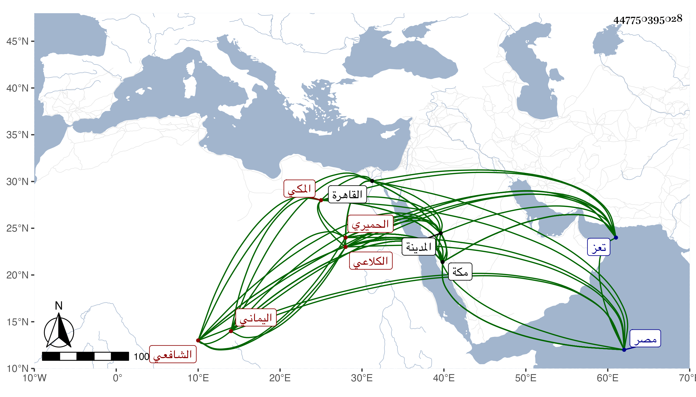

0902Sakhawi.DawLamic.ITO20230111-ara1.EIS1600.447750395028
Biography ID: 447750395028
28
محمد بن أحمد بن علي بن عمر بن أحمد بن أبي بكر بن سالم الجمال أبو الخير ابن الشهاب أبي العباس الكلاعي الحميري الشوائطي نسبة لشوائط بلد بقرب تعز اليماني المكي الشافعي الماضي أبوه وأخوه على . ولد في جمادى الأولى سنة ثماني عشرة بمكة ، ونشأ بها فحفظ القرآن وتلا به بالسبع والعشر على والده وأربعى النووى والملحة ومساعد الطلاب في الكشف عن قواعد الإعراب للنجم المرجاني والبردة والشاطبيتين وألفية النحو والحديث وتلخيص المفتاح وإيساغوجى والنخبة لشيخنا والمنهاج الأصلي والبهجة الوردية وعروض ابن الحاجب وتتمة الشاطبية في القراءات الثلاث للواسطى وثلاثة أرباع تحبير التنبيه للزنكلوني ، وسمع بمكة من وبالمدينة من الجمال الكازروني وتفقه فيها به وفي مكة بأبيه بحث عليه التنبيه والوجيز للغزالي وبالشهاب الضراسي اليماني حين كان مجاورا بمكة بحث عليه البهجة وبإبراهيم الكردي الشوساري وإمام الدين أحمد بن عبد العزيز الشيرازي بحث عليهما مفترقين نحو الربع الأول من الحاوى الصغير وأخذ الأصول عن الكردي المذكور والنجم الواسطي قرأ على كل منهما منهاج البيضاوي وسمع على ثانيهما بقراءة أبيه شرحه له ، وأجازهما بإقرائهما وقرأ على إمام الدين المشار إليه قطعة من منهاج البيضاوي وغالب التلخيص وشيئا من الكافية في النحو وعلى السيد الشريف أصول الدين قرأ عليه رسالة الزين الخوافي وعقائد النسفى وشرحها للسعد التفتازاني وشيئا من الطوالع للبيضاوي وأجاز له ، وتوجه إلى الديار المصرية في أثناء سنة خمس وأربعين فأخذ عن جماعة من أعيانها كالتقي الشمني والشرف المناوي وإمام الكاملية وقرأ على شيخنا النخبة وشرحها في مجالس آخرها سابع صفر سنة سبع وأربعين وأذن له في إفادتها لمن أراد ووصفه في مراسلة عزى فيها أباه به بأنه أسف عليه كل من عرفه لما انطوى عليه من الخير والعبادة وطلاقة الوجه وحلاوة اللسان وقلة الفضول وكثرة الاحتمال والإقبال على الاشتغال بحيث أنه لا يتفرغ لتناول ما يسد رمقه . مات بالقاهرة في رمضان سنة بضع وأربعين ودفن بالزيادة من حوش سعيد السعداء وفجع به والده عوضهما لله الجنة .
